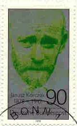
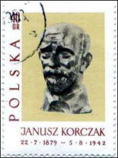
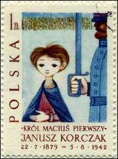
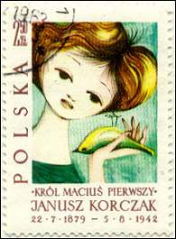
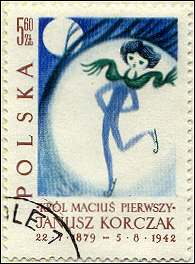
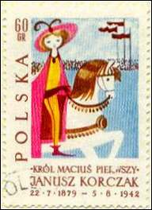
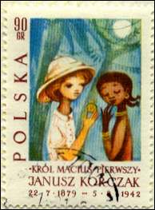
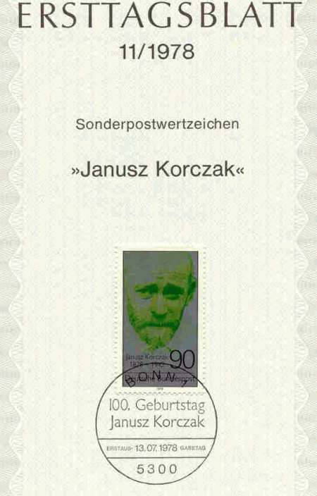

 |
|

Janusz Korczak never knew the exact year was
born - July 22, 1878, or 1879 - because his father, Jozef Goldszmit, a
prominent lawyer in Warsaw, delayed registering his birth. And no one survived
to tell us the story of the last hours of Janusz Korczak and of the children he
protected, after their train left the Warsaw Ghetto on August 6, 1942.
| It was Dr. Janusz Korczak who introduced progressive orphanages designed as just communities into Poland, founded the first national children´s newspaper, trained teachers in what we now call moral education, and worked in juvenile courts defending children's rights. His books "How to Love a Child" and "The Child´s Right to Respect" gave parents and teachers new insights into child psychology. Generations of young people had grown up on his books, especially the classic King Matt the First, which tells of the adventures and tribulations of a boy king who aspires to bring reforms to his subjects. |  |
 |
The book was as beloved in Poland as Peter Pan and Alice in Wonderland were in the English-speaking world. During the mid- 1930s, he had his own radio program, in which, as the "Old Doctor," he dispensed homey wisdom and wry humor. At the end, Korczak, who had directed a Catholic as well as a Jewish orphanage before the war, had refused all offers of help for his own safety from his Gentile colleagues and friends. "You do not leave a sick child in the night, and you do not leave children at a time like this," he said. |
| When the Nazis materialized out of that darkness with their swastikas, polished boots, and leather whips, Korczak was prepared to shield his Jewish children, as he always had, from the injustices of the adult world. He went with them into the ghetto, although he had been offered refuge on the Aryan side of occupied Warsaw, and spent the last two-odd years of his life protecting them and other orphans from starvation and disease. |  |
 |
His legend began on August 6, 1942,
during the early stages of the Nazi liquidation of the Warsaw Ghetto -
though his dedication to destitute children was legendary long
before the war. When the Germans ordered his famous orphanage evacuated,
Korczak was forced to gather together the two hundred children in his
care. He led them with quiet dignity on that final march through the ghetto streets to the train that would take them to "resettlement in the East" -the Nazi euphemism for the death camp Treblinka. He was to die as Henryk Goldszmit, the name he was born with, but it was by his pseudonym that he would be remembered. |
|
 |
.  |
|
|
Israel and Poland both claim
Korczak as their own. The Poles consider Korczak a martyr who, had he
been born a Catholic, would have been canonized by now. The Israelis
revere Korczak as one of the Thirty-six Just Men whose pure souls,
according to ancient Jewish tradition, make possible the world's
salvation.
The Polish stamps shown on
this page were issued by Poland on Nov. 12, 1962; they reproduce
illustrations from the "King Matt The First" book. Please point
to the stamps with the mouse index for more information. The German stamp
was issued in 1978.
Credits:
-
Short extracts were taken from the excellent book: The Life and Death of Janusz Korczak, by Betty Jean Lifton, St. Martin´s Griffin -New York - ISBN: 0-312-15560-3. On the Web: click here
-
The scans of Polish stamps courtesy of Mary Kay Collins, graphic artist, PASIC member. On the Web: click here
-
The German First Day sheet courtesy of Peter Dolman.